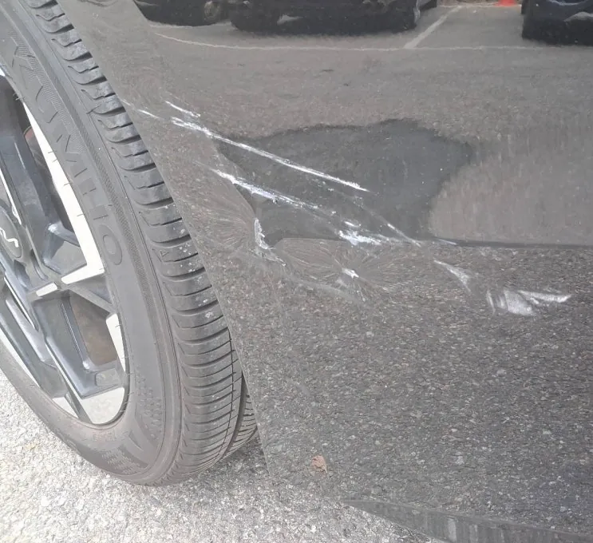
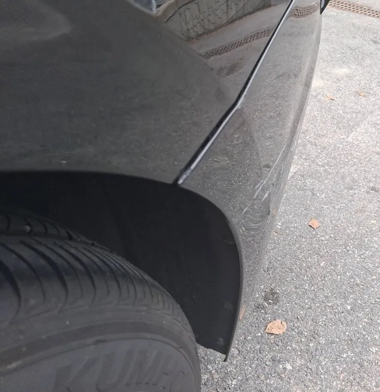
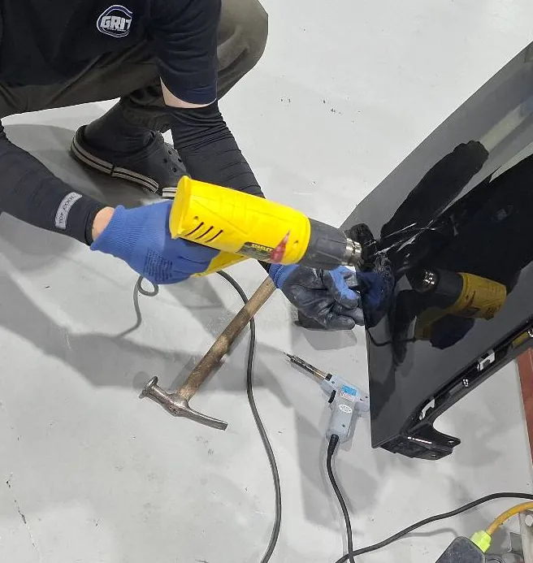
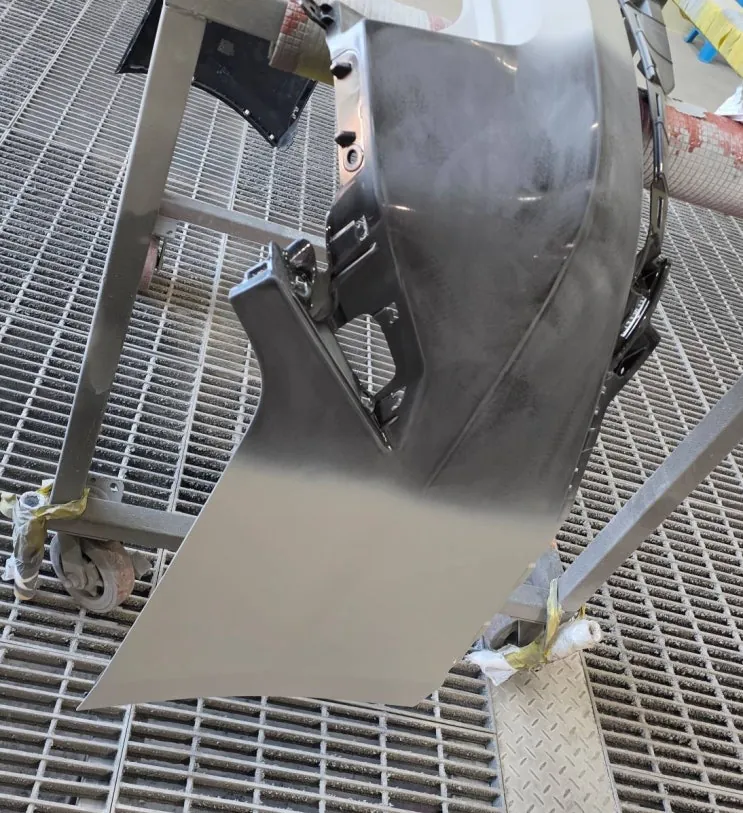
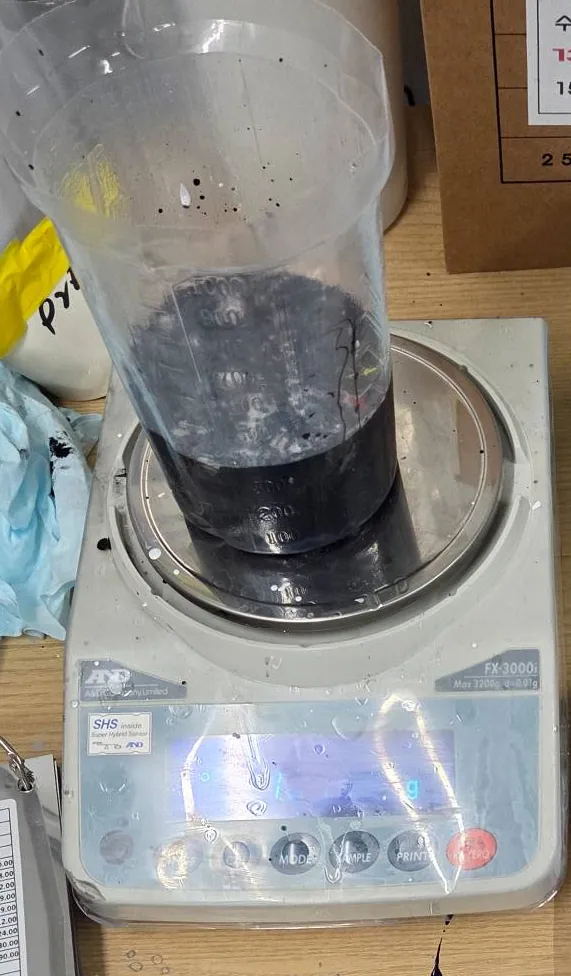
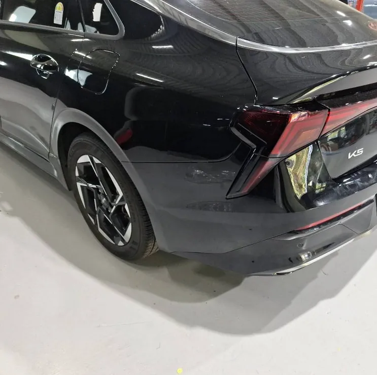
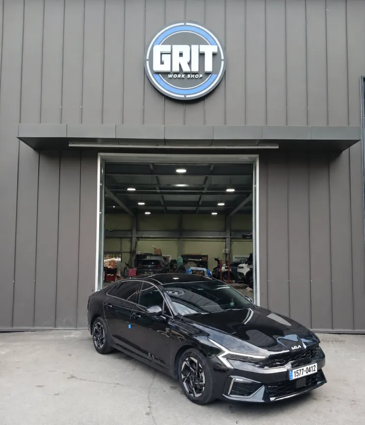

K5 뒤범퍼 좌측 도장 손상 복원 도색
한눈에 보기
기아 K5 뒤범퍼 좌측 도장 손상은 범퍼 소재의 변형·균열 여부를 먼저 확인한 뒤, 손상 부위 정리와 프라이머, 조색, 베이스·클리어 도장, 조립 후 단차·광택 검수까지 순서대로 진행했습니다.
- 차량
- 기아 K5
- 증상
- 뒤범퍼 좌측 도장 손상
- 작업
- 손상 진단
- 손상 부위 정리
- 프라이머·연마
- 조색
- 베이스·클리어 도장
- 조립
- 단차·광택 검수
- 작업장
- 그릿서비스 · 경기도 파주시 교하로 1312-53, 1동 1층

입고 상태와 진단
기아 K5가 뒤범퍼 왼쪽 도장 손상으로 입고됐습니다. 주차 중 접촉이나 가벼운 추돌로 뒤범퍼 모서리가 긁히거나 눌리는 일은 흔한 편입니다.
손상이 작아 보여도 바로 칠부터 하지 않습니다. 먼저 도장면에 긁힘만 있는지, 아니면 범퍼 소재 자체가 휘거나 갈라졌는지를 확인합니다. 이 진단 결과에 따라 작업 범위와 방법이 달라집니다.


손상 부위 정리와 하도
들뜬 도막과 오염을 걷어 내고, 찍히거나 눌린 곳이 있으면 형태를 바로잡았습니다. 그 위에 프라이머를 올리고 연마해 도료가 단단히 붙을 수 있는 바탕면을 만들었습니다.
손상 범위가 좁더라도 이 단계들을 건너뛰지 않는 것이 기본입니다. 바탕이 고르지 않으면 칠을 올린 뒤 수리한 자리가 드러나기 쉽습니다.


조색과 도장
차량 색에 맞춰 조색한 뒤 베이스 도장과 클리어 도장을 순서대로 올렸습니다. 같은 색상코드라도 연식과 노화 정도에 따라 색이 조금씩 다를 수 있어서, 실제 차량 도막과 비교해 가며 색을 맞췄습니다.
새 칠과 기존 칠이 만나는 경계도 신경 쓴 부분입니다. 경계 처리가 어색하면 빛이 비칠 때 수리 흔적이 보입니다. 클리어 도장 후에는 표면의 굴곡과 광택 정도를 주변 패널과 맞췄습니다.


조립과 출고 검수
떼어 냈던 부품을 다시 조립하고, 범퍼와 차체 사이 단차와 라인 정렬, 도장면 상태와 광택을 최종 확인했습니다. 정면뿐 아니라 보는 각도를 바꿔 가며 주변 패널과 차이가 느껴지지 않는지 본 뒤 출고했습니다.

자주 묻는 질문
뒤범퍼 일부만 긁혔는데 범퍼 전체를 칠해야 하나요?
손상 범위와 차량 색상 상태에 따라 다릅니다. 범퍼 소재 변형 여부와 도막 상태를 진단한 뒤 필요한 도색 범위를 정합니다.
단순 스크래치도 입고해야 하나요?
도막이 얼마나 깊이 상했는지에 따라 판단이 달라집니다. 사진으로 먼저 상담해 보셔도 됩니다.
K5, 비슷한 증상이라면 사진부터 보내 주세요
파주·운정·교하·금촌 어디서든 전화나 카톡으로 상태를 먼저 알려 주시면 확인 후 안내해 드립니다. 카톡에는 손상 부위가 보이게 찍은 사진을 함께 보내 주세요.
그릿서비스 · 경기도 파주시 교하로 1312-53, 1동 1층 · 네이버 지도
이 작업의 원문 기록: 네이버 블로그에서 보기